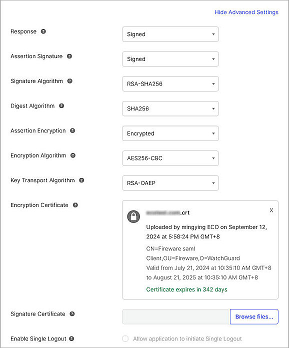

This document describes how to set up SAML authentication through the WatchGuard Access Portal with Okta as the Identity Provider.
You can configure Single Sign-On to use SAML authentication and enable your users to log in through one portal and get access to multiple services. Once you configured the SAML authentication server in Firebox, you can also use it to integrated with Access Portal, Authentication Portal and Mobile VPN with SSL.
This integration guide describes two solutions for Access Portal SAML authentication based on the Fireware version differences. We recommend that you upgrade to the Fireware v12.11 or higher.
Contents
Integration Summary
The hardware and software used in this guide include:
- Okta Admin Portal with Super Administrator roles
- WatchGuard Firebox:
- Fireware v12.11 or higher
- Fireware v12.10 or lower
- Feature key with an Access Portal license
Test Topology
This integration uses Okta Identity Cloud services to communicate with a WatchGuard Firebox over a public Internet connection:
Configure the Access Portal for SAML Authentication with Okta
The steps to configure the Access Portal for SAML authentication with Okta are different based on the version of Fireware that you have.
The WatchGuard Access Portal is a subscription service, before you can enable the Access Portal feature and configure it on your Firebox, you must add an Access Portal license to your Firebox feature key.
Enable SAML Authentication Server for Access Portal
- Log in to Fireware Web UI (https://your Firebox IP address:8080).
- Select Authentication > Servers.
- Click to make changes.
- Select the SAML tab.
The SAML page opens. - Select the Enable SAML check box.
- In the Service Provider (SP) Settings section, enter this information:
You add the IdP settings later in this process.
- Leave memberOf as the default Group Attribute Name.
- Click Save.
- Select Authentication > Users and Groups.
- Click Add.
The Add User or Group page opens. - For type, select whether you want to add a user or a group. In our example, we add a group. If you add a user, the name of the user must match the name of the Okta user.
- In the Name text box, type a name for the group.
- From the Authentication Server drop-down list, select the IdP name you specified in Step 6. In our example, the name is My_Okta.
- Click OK.
- Click Save.
Configure the Firebox Access Portal
- Log in to Fireware Web UI (https://<your Firebox IP address>:8080).
- Select Subscription Services > Access Portal.
The Access Portal page opens. - Click to make changes.
- Select the Enable Access Portal check box.
- To add an application to the Access Portal, from the Applications section, click Add. In this example, we use Web Application. For more detailed steps to add web applications and application groups to the Access Portal, go to Configure the Access Portal.
The Add Web Application page opens.

- In the Name text box, type a descriptive name.
- In the URL text box, type the URL for the web application. This URL must be publicly resolvable.
- Check OK.
- Select User Connection Settings tab.
- In the Authentication Servers section, from the Authentication Server drop down list, select My_Okta (this is the IdP name you specified in the previous section).
- Click Add.
- (Optional) To give all users and groups permission to connect to all applications, In the User Access section, keep the default option selected, All applications are available to all users and groups authenticated with Access Portal.
- To specify which users and groups can access which applications, in the User Access section, select the Specify the applications available to each user and group check box.
- Click Add.
- From the Authentication Server drop-down menu, select My_Okta (this is the IdP name we specified in the previous section).
- From the Type drop-down menu, select Group.
There are two ways to manage your users. You can add a user that matches an Okta user account, or you can add a group with a name that matches an Okta group. In our example, we add a group, but you can add a user instead.
- In the Name text box, type the group name. The group name is the group you created in the previous section.
- Select which applications are available to this user or group.
- Click OK.
- Click Save.
- Copy the SP Metadata URL, then click Done.
- Open a web browser and go to the SP Metadata URL (https://Host name or Firebox IP address/auth/saml). If you configure an Access Portal Port other than 443, you must navigate to https://Firebox interface IP address:custom port number/auth/saml.
The configuration instructions page appears.Several Firebox features use SSL/TLS for secure communication. For more information, see Shared Settings and Policy.
- Copy the SAML EntityID, Assertion Consumer Service (ACS) URL, and Single Logout Service (SLS) URL values from Option 2. These are used to configure the SAML 2.0 Application in Okta.
- SAML Entity ID – https://host name/auth/saml
- Assertion Consumer Service (ACS) URL – https://host name/auth/saml/acs
- Single Logout Service (SLS) URL – https://host name/auth/saml/sls
- Click Download Certificate.

Configure Okta
To configure Okta, complete these steps:
Add an Okta Group and User
To add an Okta group and user:
- Log in to the Okta Admin Console.
- Select Directory > Groups > Add Group.
- In the Name text box, type a group name. This group name is the same as the one configured in the WatchGuard Firebox.
- Click Save.
- To add a user in Okta, select Directory > People > Add Person.
You can add your own user information.
- On the Add Person page, type the required details, then click Save.
You can import users and groups from Active Directory to Okta. For more information, go to the Okta documentation.
Configure a SAML 2.0 Application
To configure a SAML 2.0 application:
- Select Applications > Applications.
The Applications page opens.
- Click Create App Integration.
The Create a New App Integration page opens.
- Select SAML 2.0 as the sign-in method, then click Next.
The Create SAML Integration page opens.
- In the App Name text box, type a name.
- (Optional) To upload a logo, from the App Logo section, click the Upload icon, then select an image to upload.
- Click Next.
The Configure SAML tab opens.
- On the SAML Settings page, in the General section, configure these settings:
Single Sign On URL
Type or paste the URL in this format: https://host name/auth/saml/acs
The WatchGuard label for this value is the Assertion Consumer Service (ACS) URL.
Audience URI (SP Entity ID)
Type or paste the URL in this format: https://host name/auth/saml
The WatchGuard label for this value is the SAML Entity ID.
Default RelayState
Leave the Default RelayState text box blank.
Name ID Format
Select Unspecified.
Application Username
Select Email.
Update Application Username On
Select Create and Update.
- Click Show Advanced Settings, then specify these settings:
Response
Select Signed.
Assertion Signature
Select Signed.
Signature Algorithm
Select RSA-SHA256.
Digest Algorithm
Select SHA256.
Assertion Encryption
Select Encrypted.
Encryption Algorithm
Select AES256-CBC.
Key Transport Algorithm
Select RSA-OAEP.
Encryption Certificate
Click Browse Files, then select the certificate you downloaded from the WatchGuard SAML 2.0 Configuration for WatchGuard Access Portal in the Configure Your Firebox for Okta section of this document.

- Keep the default values for other settings.
- This example uses group authentication. If you want to use user authentication, skip this step. In the Group Attribute Statements (optional) section:
- In the Name text box, type memberOf.The group attribute name matches the default group attribute name in WatchGuard Firebox. This example uses group authentication.
- From the Filter drop-down list, select Equals.
- In the adjacent text box, type the Okta group name you created. This must match the group name configured on the WatchGuard Firebox.
- Click Next.
- In the Help Okta Support understand how you configure this application section, select one of these options:
- App type — Most deployments are in this category.
- Contact app vender — Select this option if your company deploys a service for general public use.
- Click Finish.
- Select the Sign On tab.
- From the Metadata Details section, copy the value in the Metadata URL text box. The Okta Metadata URL is used when configuring the SAML Authentication Server in the WatchGuard Firebox.
The link is in this format: https://okta account name.okta.com/app/random value/sso/saml/metadata
- Select the Assignments tab.
- Select Assign > Assign to Groups.
If you select Assign to People, the user must belong to the group you configured in the Group Attribute Statements section. - Select the group, then click Assign.
- Click Done.
Complete the WatchGuard SAML Setup
To complete the WatchGuard SAML setup, from Fireware Web UI:
- Log in to Fireware Web UI (https://your Firebox IP address:8080).
- Select Authentication > Servers.
- Click SAML.
- From the Identity Provider (IdP) Settings section, in the IdP Metadata URL text box, type or paste the IdP Metadata URL you copied from Okta in the Configure a SAML 2.0 Application section.
- Click Save.
Configure the Access Portal
- Log in to Fireware Web UI (https://your Firebox IP address:8080).
- Select Subscription Services > Access Portal.
The Access Portal page opens.
- Select the Enable Access Portal check box.
- Select the SAML tab.
- Select the Enable SAML check box.
- In the Service Provider (SP) Settings section, provide these details:
You add the IdP settings later in this process.- IdP Name — Enter a name for the SAML authentication to appear in other Firebox settings as the server name. In this example, we use My_Okta.
- Host Name — Enter the fully qualified domain name that resolves to the Firebox external interface.
- Leave memberOf as the default Group Attribute Name.
- Click Save.
- Open a web browser, and go to https://host name or IP Address/auth/saml. If you configure an Access Portal port number other than 443, you must go to https://Firebox interface IP address:custom port number/auth/saml.
The configuration instructions page appears.Several Firebox features uses SSL/TLS for secure communication. For more information, go to Shared Settings and Policy.
- Copy these values from the configuration instructions page:
- SAML Entity ID in this format: https://host name/auth/saml
- Assertion Consumer Service (ACS) URL in this format: https://host name/auth/saml/acs
- Single Logout Service (SLS) URL in this format: https://host name/auth/saml/sls
- Click Download Certificate.
Configure Okta
To configure Okta, complete these steps:
Add an Okta Group and User
To add an Okta group and user:
- Log in to the Okta Admin Console.
- Select Directory > Groups > Add Group.
- In the Name text box, type a group name. This group name must match the name of the group you added to the WatchGuard Firebox.
- Click Save.
- To add a user in Okta, select Directory > People > Add Person.
You can add your own user information.
- On the Add Person page, type the required details, then click Save.
You can import users and groups from Active Directory to Okta. For more information, go to the Okta documentation.
Configure a SAML 2.0 Application
To configure a SAML 2.0 application:
- Select Applications > Applications.
The Applications page opens.
- Click Create App Integration.
The Create a New App Integration page opens.
- Select SAML 2.0 as the sign-in method, then click Next.
The Create SAML Integration page opens.
- In the App Name text box, type a name.
- (Optional) To upload a logo, from the App Logo section, click the Upload icon, then select an image to upload.
- Click Next.
The Configure SAML tab opens.
- On the SAML Settings page, in the General section, configure these settings:
Single Sign On URL
Type or paste the URL in this format: https://host name/auth/saml/acs
The WatchGuard label for this value is the Assertion Consumer Service (ACS) URL.
Audience URI (SP Entity ID)
Type or paste the URL in this format: https://host name/auth/saml
The WatchGuard label for this value is the SAML Entity ID.
Default RelayState
Leave the Default RelayState text box blank.
Name ID Format
Select Unspecified.
Application Username
Select Email.
Update Application Username On
Select Create and Update.
- Click Show Advanced Settings, then specify these settings:
Response
Select Signed.
Assertion Signature
Select Signed.
Signature Algorithm
Select RSA-SHA256.
Digest Algorithm
Select SHA256.
Assertion Encryption
Select Encrypted.
Encryption Algorithm
Select AES256-CBC.
Key Transport Algorithm
Select RSA-OAEP.
Encryption Certificate
Click Browse Files, then select the certificate you downloaded from the WatchGuard SAML 2.0 Configuration for WatchGuard Access Portal in the Configure Your Firebox for Okta section of this document.
- Keep the default values for other settings.
- This example uses group authentication. If you want to use user authentication, skip this step. In the Group Attribute Statements (optional) section:
- In the Name text box, type memberOf. The group attribute name must match the default group attribute name in WatchGuard Firebox.
- From the Filter drop-down list, select Equals.
- In the adjacent text box, type the Okta group name you created. This must match the group name you configured on the WatchGuard Firebox.
- Click Next.
- In the Help Okta Support understand how you configure this application section, select one of these options:
- App type — Most deployments are in this category.
- Contact app vender — Select this option if your company deploys a service for general public use.
- Click Finish.
- Select the Sign On tab.
- From the Metadata Details section, copy the text in the Metadata URL text box. The Okta Metadata URL is used in the WatchGuard Access Portal.
The link is in this format: https://<okta account name>.okta.com/app/<random value>/sso/saml/metadata - Select the Assignments tab.
- Select Assign > Assign to Groups.
If you select Assign to People, the user must belong to the group you configured in the Group Attribute Statements section. - Select the group, then click Assign.
- Click Done.
Complete the WatchGuard SAML Setup
To complete the WatchGuard SAML setup, from Fireware Web UI:
- Log in to Fireware Web UI (https://your Firebox IP address:8080).
- Select Subscription Services > Access Portal.
- Select the SAML tab.
The Access Portal page opens.
- From the Identity Provider (IdP) Settings section, in the IdP Metadata URL text box, type or paste the IdP Metadata URL you copied from Okta in the Configure a SAML 2.0 Application section of this document.
- Click Save.
- Select Authentication > Users and Groups.
- Click Add.
The Add User or Group page opens. - For type, select whether you want to add a user or a group. In our example, we add a group. If you add a user, the name of the user must match the name of the Okta user.
- In the Name text box, type a name for the group. The group name must be the same as the group name specified in the memberOf attribute on Okta.
- From the Authentication Server drop-down list, select the authentication server where the user or group exists. This is the IdP name that you specified in Step 6 of the Configure the Access Portal section. In our example, the name is My_Okta.
- Click OK.
- Click Save.
- To add an application to the Access Portal, select Subscription Services > Access Portal.
- From the Applications section, click Add. In this example, we use Web Application.
The selected application page opens.
- In the Name text box, type a descriptive name.
- In the URL text box, type the URL of the web application. This URL must be publicly resolvable.
- Click OK.
- Click Save.
- Select the User Connection Settings tab.
- (Optional) To give all users and groups the permission to connect to all applications, in the User Access section, select All Applications are Available to All Users and Groups Authenticated With the Access Portal.
- To specify the applications a user and group can access, select Specify the Applications Available to Each User and Group.
- Click Add.
The Add User or Group page opens.
- From the Select a User or Group section, from the Authentication Server drop-down list, select the authentication server. In this example, we select My_Okta.
- From the Type drop-down list, select Group.
- In the Name text box, type the group name. The group name must be the same as the group name specified in the memberOf attribute on Okta.
- Select the applications that are available to this group.
- Click OK.
- Click Save.
Test the Integration
After you complete these configuration steps, users in the group you added can sign in to either the Okta account or to a resource configured with Okta SAML Single Sign-On.
To test the integration:
- In a web browser, go to the Access Portal URL (https://Host Name or IP address).
- To log in, click the name of the SAML portal. In this example, click My_Okta.
- Complete the authentication process in Okta.
After successful authentication, the user gets access to the resource.